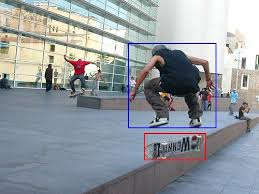

Problem Statement
The objective of this project is to detect objects of interest in a given image and highlight the relationships between these objects. Almost all real-world objects have visual relationships between them. The input to the system is an image along with a textual description of an object-object relationship and the output is the image with bounding boxes around the objects that correspond to the textual input. The output would also include a scene graph representing all object-object relationships in the image. For instance, given an input “person on a skateboard”, the system would give as output:
